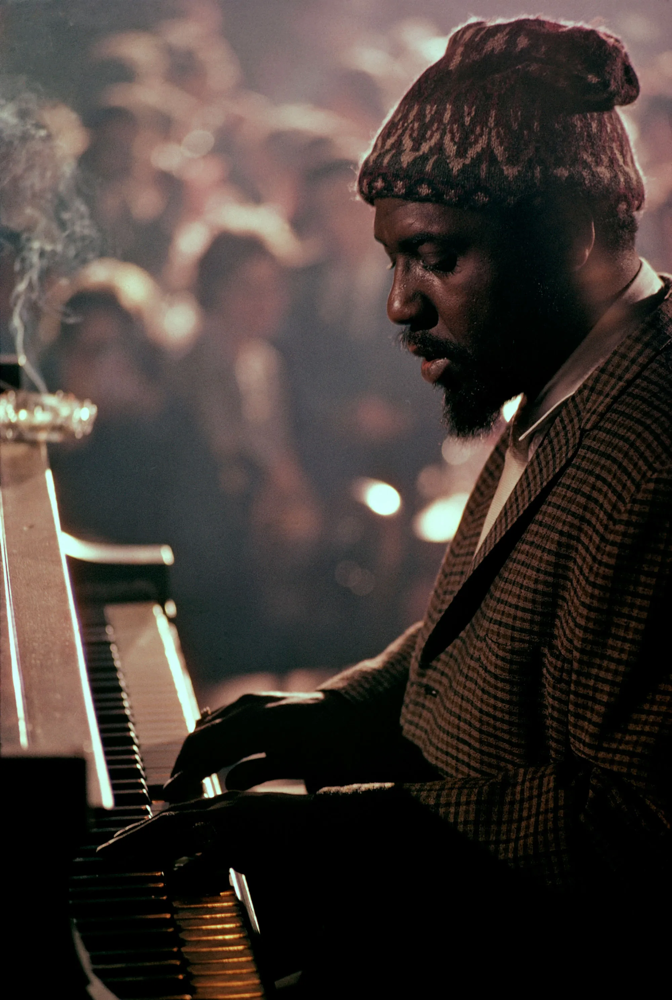
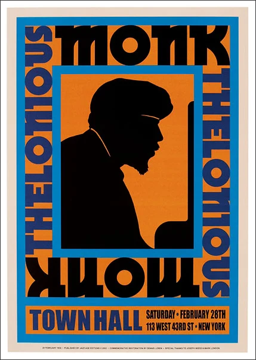
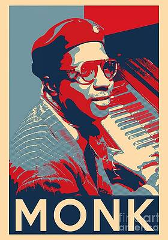
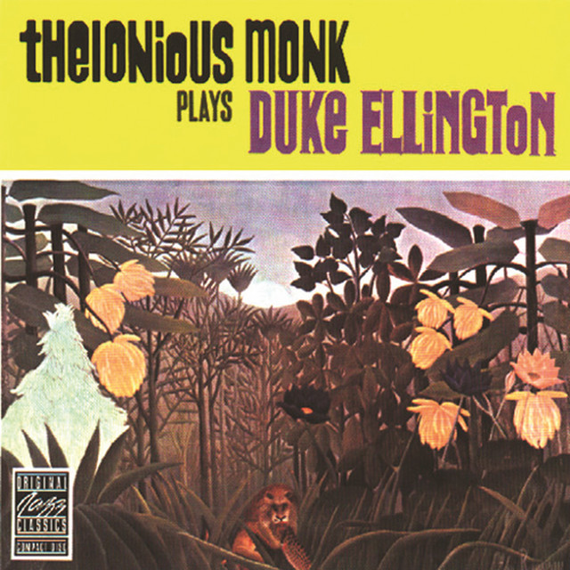
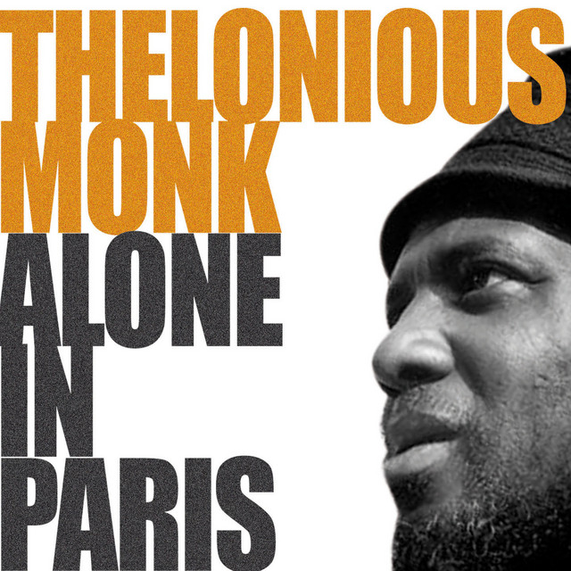

THE MAN BEHIND THE MUSIC
October 10, 1917 - February 17, 1982
Thelonious Sphere Monk was one of the most original voices in American music. His sound was deeply rooted in jazz tradition, yet unlike anything that came before it. His playing, compositions, sense of rhythm, and even his use of silence helped reshape modern jazz.

AN ORIGINAL FROM THE BEGINNING
Born in Rocky Mount, North Carolina, Monk moved to New York City with his family when he was four years old. Growing up in Manhattan's San Juan Hill neighborhood, he showed an early talent for music.
He studied music from an early age and began learning piano around age nine. By his teens, he was performing and developing his own musical voice.
After traveling as a pianist with an evangelist, he returned to New York and began playing in local clubs.

A NEW LANGUAGE FOR JAZZ
Minston's Playhouse and the Birth of Bebop
In 1941, Monk became the house pianist at Minton's Playhouse in Harlem.
The club became a meeting place for musicians experimenting with new ideas in harmony and rhythm. Monk played alongside musicians who helped shape the emerging language of bebop.
His compositions—including “'Round Midnight,” “Epistrophy,” and “52nd Street Theme”—became important parts of the jazz repertoire.

A STYLE ENTIRELY HIS OWN
Monk created a musical language that was uniquely his. His use of space, silence, unexpected harmonies, and angular rhythms made his music recognizable.
As a composer, he challenged familiar approaches to melody, harmony, and rhythm.
SPACE
Silence became part of the music
RHYTHM
Angular, unpredictable, and deeply expressive.
HARMONY
Unexpected chords challenged traditional expectations.
ORIGINALITY
Every composition had its own identity.
THE BREAKTHROUGH
The World Catches Up to Monk
Monk's Riverside recordings helped bring his music to a wider audience.

Thelonious Monks Plays Eduke Ellington

The Unique Thelonious Monks

Brilliant Corners

Monk's Music

Thelonious Monks Alone
A major turning point came in 1957, when Monk began a successful engagement at the Five Spot Café with John Coltrane.
From there, his reputation grew rapidly. He collaborated with musicians including Johnny Griffin, Sonny Rollins, Art Blakey, Clark Terry, and Gerry Mulligan, and in 1959 led a big band performance at Town Hall.
Jazz audiences had finally begun to catch up with Monk's music.
MONK ON THR WORLD STAGE
Monk toured internationally and performed with his quartet, including tenor saxophonist Charlie Rouse. His music reached audiences across Europe, Japan, and the United States.
1947
First recording session as a leader
1957
Five Spot engagement with Joh Coltrane
1962
Signs with Columnbia Records
1964
Appears on the cover of Time
THE FINAL YEARS
Monk performed less frequently during his later years. His final public appearance was in 1976.
Thelonious Monk died on February 17, 1982.
A LEGACY THAT STILL MOVES
Today, Thelonious Monk is recognized as a master of American music.
His compositions continue to be performed, studied, and celebrated by musicians and listeners around the world.
His legacy is not simply that he played differently. It is that he showed how powerful originality could be.
Explore Monk Music